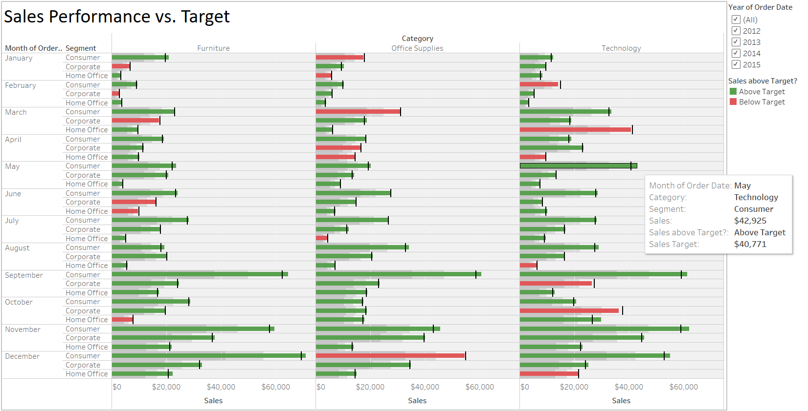

Office Supplies sales and Performance Analysis - Tableau

Analysis of Office Sales vs. Performance Supplies Dashboard in Tableau
Introduction:
In today's business world, data analysis plays a crucial role in making informed decisions and driving growth. As part of a portfolio project, we embarked on analysing the sales performance of office supplies compared to performance supplies using Tableau, a powerful data visualization tool. This report presents an overview of our project, highlighting the process, insights gained, and the visualizations created.
Objective:
The primary objective of this project was to analyse and compare the sales performance of office supplies and performance supplies over a specified period. By leveraging Tableau's capabilities, we aimed to identify trends, patterns, and key metrics that would help us understand the sales dynamics of these two product categories.
Data Collection and Preparation:
To conduct our analysis, we collected a dataset containing sales data for office supplies and performance supplies from an e-commerce company. The dataset included information such as product details, sales figures, dates, and customer information. We performed data cleaning and preprocessing, ensuring data integrity and consistency.
Tableau Dashboard:
{kind=link}
The provided dataset offers valuable insights into the sales performance of different product categories, specifically Furniture, Office Supplies, and Technology, across various months and customer segments. By leveraging Tableau, we can conduct a detailed analysis and gain a deeper understanding of the trends and patterns in sales.
1. Overall Sales Performance:
- Furniture consistently shows strong sales across all months, with some fluctuations in performance.
- Office Supplies exhibit a steady increase in sales over time.
- Technology experiences significant variations in sales, with some months performing exceptionally well.
2. Monthly Sales Comparison:
- January and March tend to be strong months for Office Supplies and Technology.
- September and November are notable months for Furniture sales.
- December showcases high sales across all categories, except for Office Supplies in the Consumer segment.
3. Segment-wise Sales Analysis:
- The Consumer segment consistently leads in sales for all categories throughout the year.
- Corporate and Home Office segments demonstrate comparable sales figures, with occasional variations.
4. Performance against Sales Targets:
- The dataset includes information on whether the sales for each category and segment are above or below the target.
- While there are instances of sales falling below the target, the majority of sales perform above expectations, indicating overall success in meeting or exceeding targets.
5. Category-wise Performance:
- Furniture consistently achieves strong sales performance, often exceeding targets.
- Office Supplies and Technology exhibit positive sales performance overall, with occasional segments falling below the target.
6. Identifying Key Opportunities and Challenges:
- There are notable opportunities for growth in Furniture sales, particularly in the Consumer segment.
- Office Supplies have consistent performance across segments, highlighting potential areas for improvement.
- Technology, while displaying overall strong sales, shows some fluctuations in specific segments, indicating areas that require attention.
Conclusion:
The Office Sales vs. Performance Supplies dashboard in Tableau successfully analyzed the sales performance of office supplies compared to performance supplies. The visualizations we created provided meaningful insights into the dynamics of these product categories, allowing us to make data-driven decisions and identify areas for improvement. Tableau's intuitive interface and powerful features proved instrumental in showcasing the data effectively. This project highlighted the significance of data visualization in uncovering valuable business insights and demonstrated the power of Tableau as a tool for data analysis.
You can get the data and project files from my GitHub